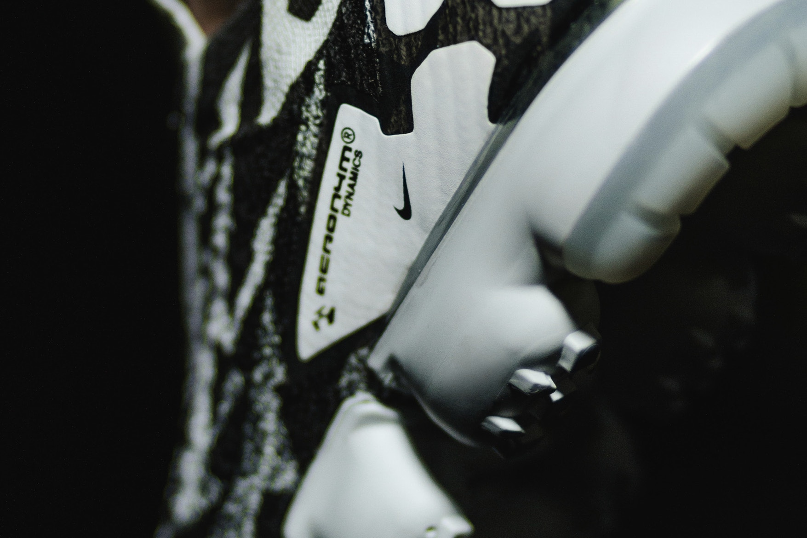

Viggos x Yeezy Talk Vietnam “The V Generation” T-shirt – Kết nối cộng đồng
Sau một thời gian im ắng, SNKR Việt Nam cùng Vietnamese Street Style Group cùng trở lại với những bộ…
Rời khỏi Nike vì những bất đồng trong việc sáng tạo, Mr.West nhanh chóng gia nhập adidas vào năm 2013 và tiếp tục series Yeezy tên tuổi. Không còn “limited” như trước nữa, Kanye tâm nguyện mang sự sáng tạo của mình đến cho công chúng thưởng thức với lời tuyên bố “Yeezy For Everyone” – “Yeezy Cho Mọi Nhà”.
Và đúng thật như vậy, series adidas Yeezy với những thiết kế như BOOST 350, BOOST 350 v2, BOOST 750,… được release liên tục với vô số phối màu khác nhau. Đi cùng đó, hình thức release cũng được đổi mới nhằm hạn chế reseller, mang đến cơ hội tốt nhất cho những người yêu thích Yeezy thực thụ.
Thậm chí ngay tại Việt Nam, Yeezy cũng đã có nhiều lần release chính thức thông qua hình thức raffle.
Cơ hội mà mọi người, ở Việt Nam nói riêng và toàn thế giới nói chung, sở hữu trong tay một sản phẩm – một đôi giày Yeezy với mức giá retail không còn là điều quá là xa vời nữa.
Cũng chính vì lí do đó, cộng đồng người yêu giày, đặc biệt là Yeezy, ở Việt Nam ngày càng phát triển hơn. Group Yeezy Talk Vietnam ra đời như một sự phát triển tất yếu, trở thành một nơi để những người đam mê Yeezy ở Việt Nam giao lưu, học hỏi, trao đổi kiến thức và hỗ trợ lẫn nhau trong việc mua bán. Đây hiện tại là Facebook group chuyên về các sản phẩm liên quan đến Yeezy lớn nhất tại Việt Nam.In its most comprehensive sense, the oxygen of the air is a food; as although it is admitted by the lungs, it passes into the blood, and there re-acts upon the other food which has passed through the stomach. It is usual, however, to restrict the term food to such nutriment as enters the body by the intestinal canal. Water is often spoken of as being distinct from food, but for this there is no sufficient reason.
Many popular writers have divided foods into flesh-formers, heat-givers, and bone-formers. Although attractive from its simplicity, this classification will not bear criticism. Flesh-formers are also heat-givers. Only a portion of the mineral matter goes to form bone.
These last are not strictly foods, if we keep to the definition already given; but they are consumed with the true foods or nutrients, comprised in the other two classes, and cannot well be excluded from consideration.
Water forms an essential part of all the tissues of the body. It is the solvent and carrier of other substances.
Mineral Matter or Salts, is left as an ash when food is thoroughly burnt. The most important salts are calcium phosphate, carbonate and fluoride, sodium chloride, potassium phosphate and chloride, and compounds of magnesium, iron and silicon.
Flesh-formers, heat-givers, and bone-formers
Mineral matter is quite as necessary for plant as for animal life, and is therefore present in all food, except in the case of some highly-prepared ones, such as sugar, starch and oil. Children require a good proportion of calcium phosphate for the growth of their bones, whilst adults require less. The outer part of the grain of cereals is the richest in mineral constituents, white flour and rice are deficient. Wheatmeal and oatmeal are especially recommended for the quantity of phosphates and other salts contained in them. Mineral matter is necessary not only for the bones but for every tissue of the body.
When haricots are cooked, the liquid is often thrown away, and the beans served nearly dry, or with parsley or other sauce. Not only is the food less tasty but important saline constituents are lost. The author has made the following experiments:—German whole lentils, Egyptian split red lentils and medium haricot beans were soaked all night (16 hours) in just sufficient cold water to keep them covered. The water was poured off and evaporated, the residue heated in the steam-oven to perfect dryness and weighed. After pouring off the water, the haricots were boiled in more water until thoroughly cooked, the liquid being kept as low as possible. The liquid was poured off as clear as possible, from the haricots, evaporated and dried. The ash was taken in each case, and the alkalinity of the water-soluble ash was calculated as potash (K2O). The quantity of water which could be poured off was with the German lentils, half as much more than the original weight of the pulse; not quite as much could be poured off the others.